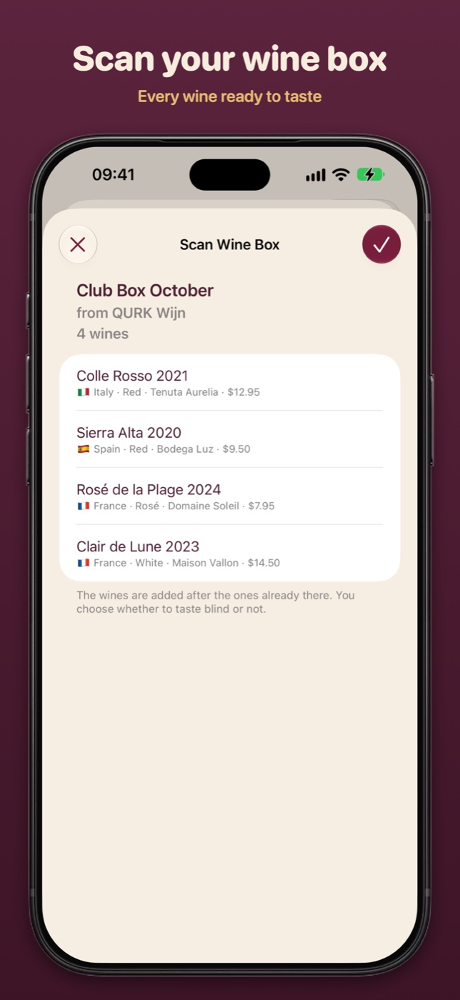
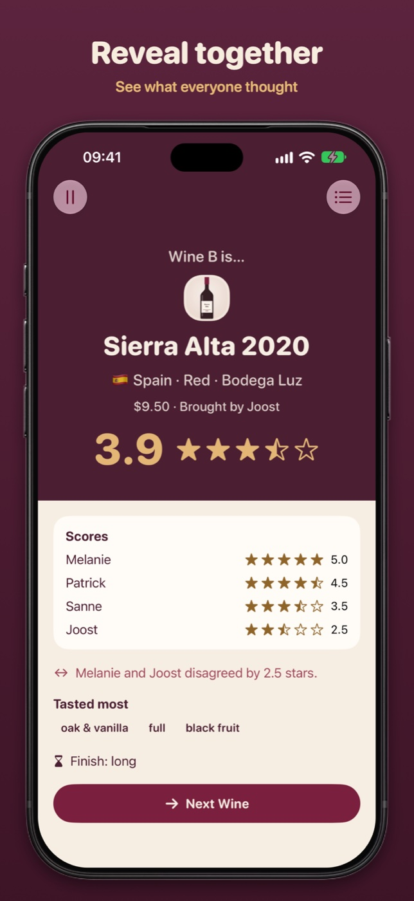
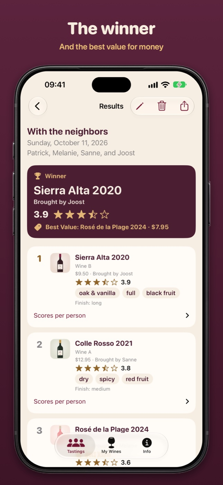
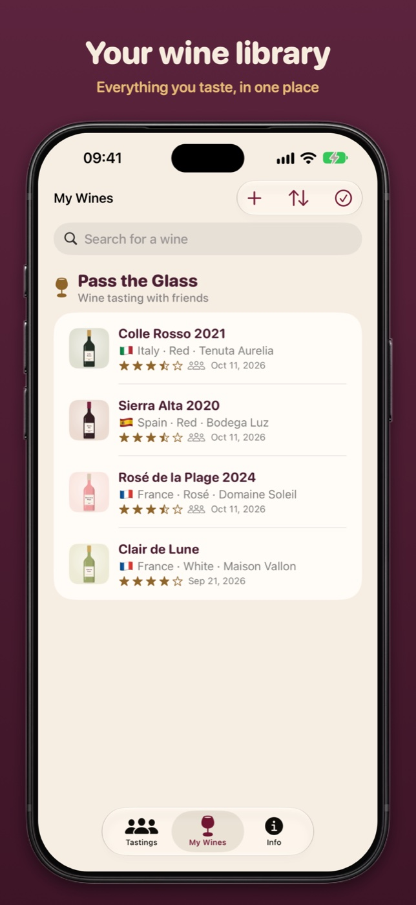

Pass the Glass
Nederlands
Pass the Glass
Nederlands
Press
Images and the icon of Pass the Glass, free to use with an article about the app. Download them one by one, or all at once.
Images
Tasting together and the wine box








On iPhone Duo


Icon

Facts
| App | Pass the Glass: taste wine together. One phone goes around the table, everyone gives their own score, and at the end comes the reveal with the winner and the Best Value. |
|---|---|
| Price | Free, with no account, ads or tracking |
| Runs on | Any iPhone with iOS 27 and any iPad with iPadOS 27, designed for iPhone Duo (tabletop, book, open and closed) |
| Wine box | Scan the QR code on the card with your iPhone or iPad camera: the app opens with every wine ready. Without an iPhone or iPad, you taste a wine box in your browser. For wine shops, Qurk Wijn handles the tech: how it works |
| Languages | English and Dutch |
| Age | 18+, drink responsibly |
| Made by | Qurk Wijn, Poeldijk, the Netherlands |
| Links | App Store · passtheglass.app |
| Contact | Patrick Knoester, qurk.wijn@gmail.com |